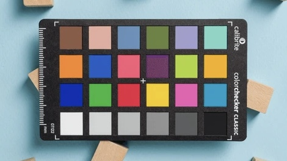
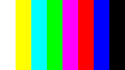
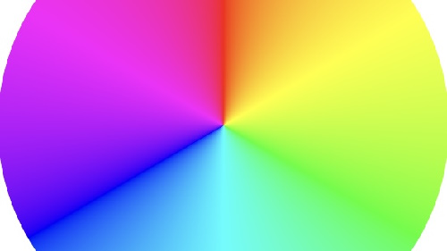
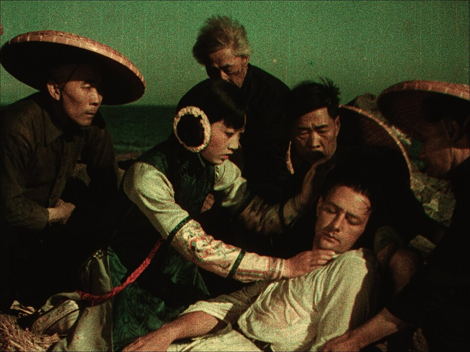
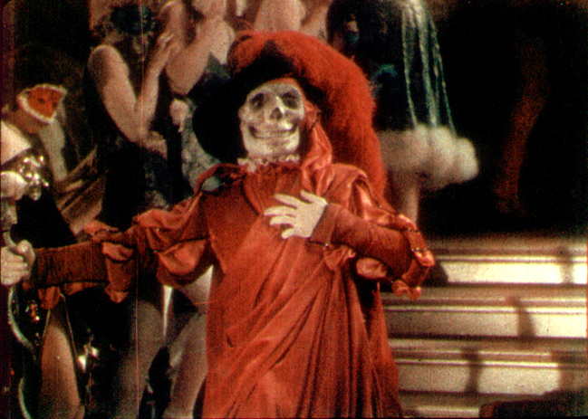
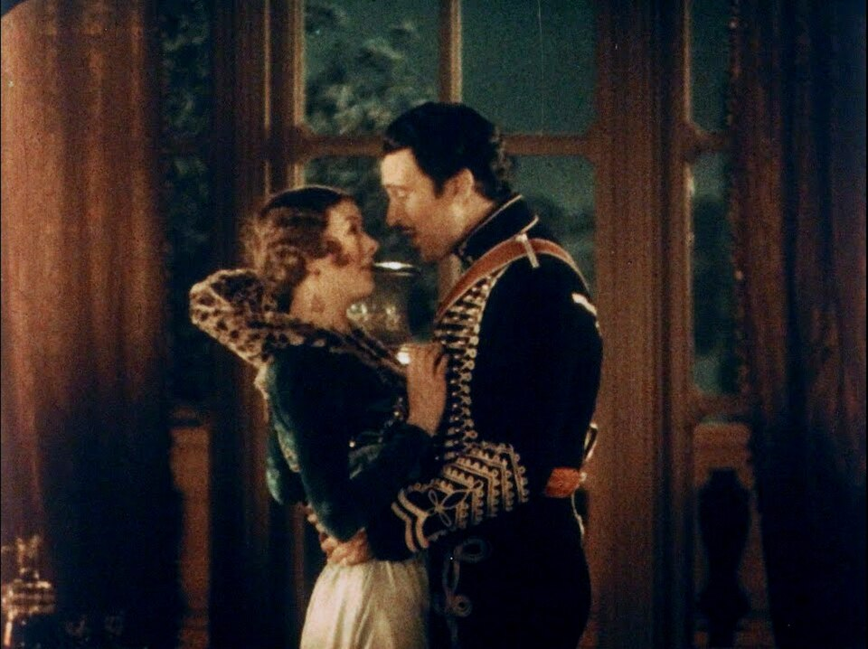

Select image:
upload
Upload

Color Checker

Bars

Color Circle
Select the 2 channels:
Warm Channel
Red
Cool Channel
Green
Green+Blue
Blue
180°
0°
±0μ
Original
After White Balance
Historical Technicolor Films:

The Toll of the Sea, 1922
Anna May Wong  and Kenneth Harlan
and Kenneth Harlan

The Phantom of the Opera, 1925
Primarily black and white with select sequences filmed in two-strip Technicolor, including the masquerade ball where the Phantom's red death costume was dramatically revealed in color.

Bride of the Regiment, 1930
A musical operetta filmed entirely in two-strip Technicolor, starring Myrna Loy and Walter Pidgeon.